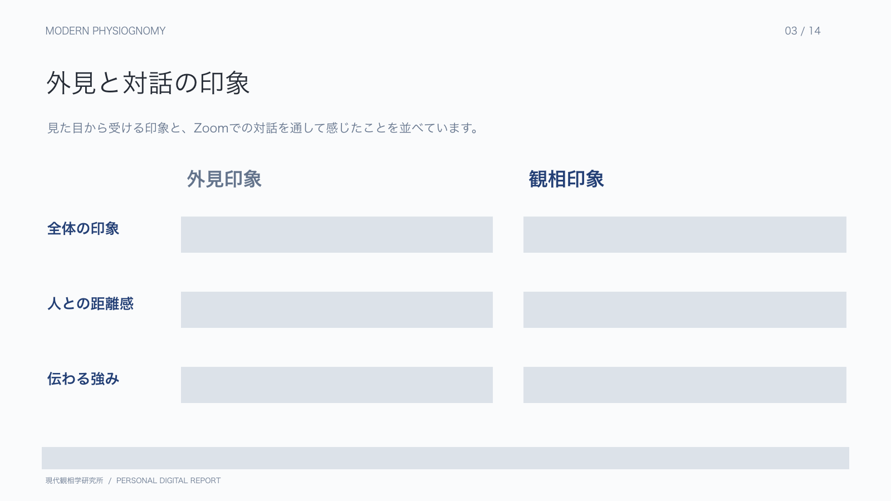
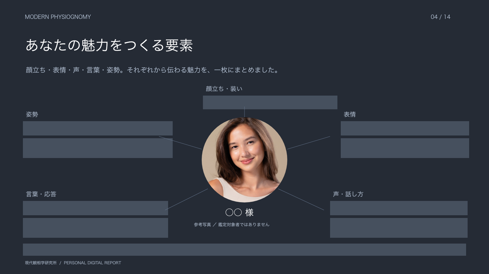
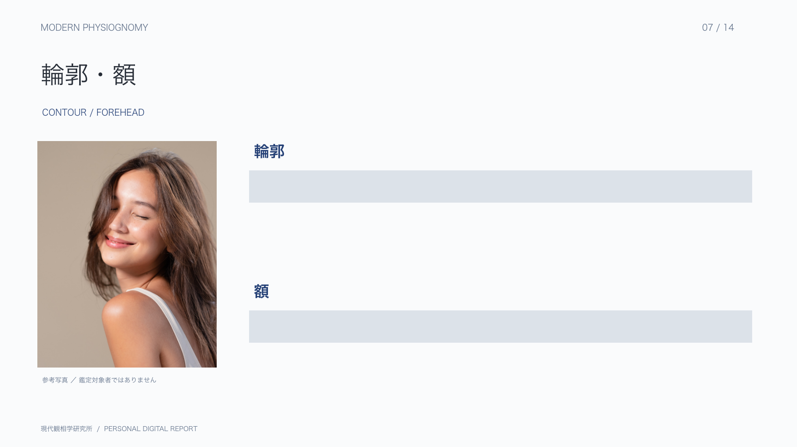
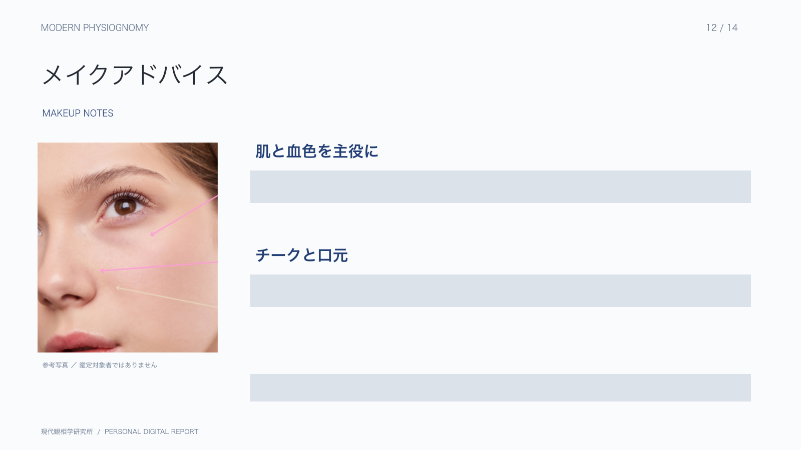
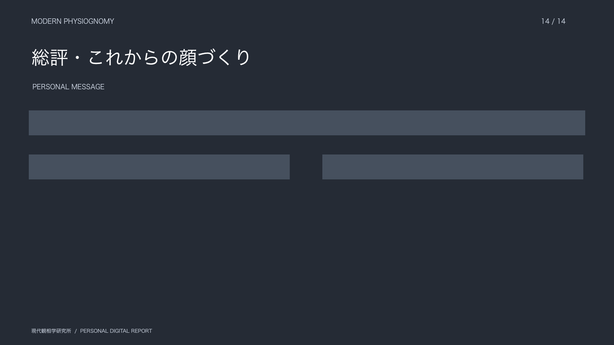

今の印象と、FACE GAP
自分ではどう捉えているか、外見からはどのような印象が伝わるか。対話を通じて、その違いを整理し、今の自分を見つめる手がかりをお伝えします。
MODERN PHYSIOGNOMY / PERSONAL READING
顔立ち、表情、話し方。
あなたらしい魅力を読み解き、
これからの顔づくりへ。
顔には内面が表れる。
良い顔は作れる。
01 / YOUR PERSONAL REPORT
総合個人鑑定では、Zoomでの対話と観察をもとに、あなたの特徴や魅力、これからの印象づくりへの提案をデジタルレポートにまとめます。その場で聞いて終わりにせず、自分の顔と向き合いたくなったときに読み返せる一冊をお届けします。
自分ではどう捉えているか、外見からはどのような印象が伝わるか。対話を通じて、その違いを整理し、今の自分を見つめる手がかりをお伝えします。
目・鼻・口・輪郭・横顔・耳など、各パーツと顔全体の印象を読み解きます。誰かの顔に近づけるのではなく、ご自身の特徴をどう活かすかを考えます。
表情の変化、声、話し方、視線、姿勢、仕草。Zoomでお話しする中で観察したことを、顔立ちと合わせて総合的にお伝えします。
観察した特徴をもとに、魅力を活かすメイクや印象づくりのアドバイスをまとめます。毎日のメイクや、人と会う前に振り返る際にもご活用いただけます。
THE HUMAN PERSPECTIVE
Zoom40分でお話を伺いながら、顔立ちと動きのある印象を観察します。その内容を整理し、一人ひとりの特徴やご相談に合わせて、鑑定結果とご提案を14ページにまとめます。
鑑定を担当する松本智子は、現代観相学創始者・研究家。ニューヨークでコミュニケーションメディアアーツを専攻し、ロンドンとパリでメイクを学び、メイクアップアーティスト・眉講師として国内外1万人以上のメイクに携わってきました。その経験を、顔の特徴を活かすためのご提案につなげています。
顔だけで性格や運命を断定するものではありません。デジタルレポートは、ご自身の特徴や印象を振り返り、これからの顔づくりを考えるためのものです。
REPORT PREVIEW
全14ページ（表紙・目次を含む）から、一部をご紹介します。個別の解説文は非公開にし、見出しと構成をご覧いただけるようにしています。写真は参考素材で、鑑定対象者ではありません。





直接相談したい方にはZoom単独鑑定。観察した内容とご提案を、デジタルレポートとして手元に残したい方には総合個人鑑定をご用意しています。
| 比較 | 写真鑑定 | Zoom鑑定40分 デジタルレポートなし | 総合個人鑑定 Zoom40分＋デジタルレポート14ページ おすすめ |
|---|---|---|---|
| 鑑定方法 | 正面・横顔の写真2枚 | Zoomで40分の対話 | Zoomで40分の対話 |
| デジタルレポート | 簡易デジタルレポート（2ページ） | なし | デジタルレポート（14ページ） |
| アフターサービス | 対象外 | 対象外 | 鑑定後1ヶ月以内・追加質問1回 料金に含まれます |
| 対象 | 女性・男性 | 女性限定 | 女性限定 |
| 料金（税込） | 11,000円 | 11,000円 | 55,000円 |
AFTERCARE
総合個人鑑定55,000円（税込）に含まれるアフターサービス
鑑定後1ヶ月以内に1回、追加の質問を受け付けます。デジタルレポートを読み返して気になったことや、鑑定後に試したメイク・髪型についてご相談いただけます。
ご質問は、鑑定時のご案内メールへの返信でお送りください。写真鑑定・Zoom単独鑑定には、このアフターサービスは含まれません。
以下のお申し込みフォームより、ご希望のメニューを選び、お送りください。
生年月日は任意です。ご記載いただくと、プラスの情報をお伝えします。鑑定内容や必要事項など、詳細を記載したメールをご返信します。
メール内容にご同意いただけましたら、ご入金をお願いいたします。ご入金をもって正式なお申し込みとなります。
ご入金がない場合、ご予約は成立しません。ライフステージのように、顔にもステージがあります。迷いの中にいる顔、挑戦している顔、意思のある顔、年齢による変化に戸惑う顔、自分らしく生きている顔。古い人相学とも、美容のための顔タイプ診断とも違う、現代観相学独自のメソッドで、今のあなたの顔を読み解きます。
まだ診断をしていない方は、まず無料診断から
← SELF FACE CHECK（無料）